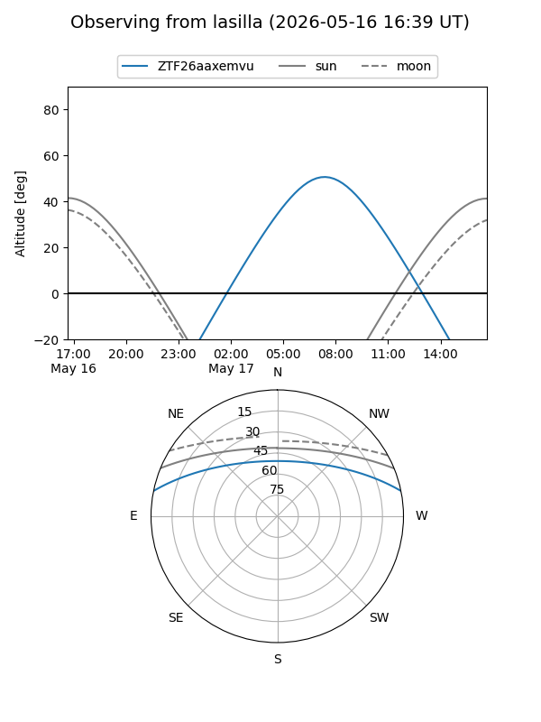
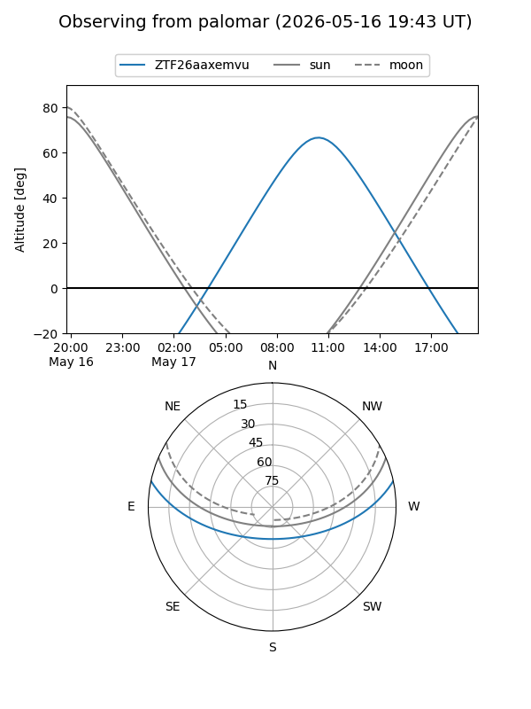

ZTF26aaxemvu
Target ZTF26aaxemvu at 2026-05-16 13:39
Aliases and brokers:
FINK: link
Lasair: link
ALeRCE: link
alt names
ZTF26aaxemvu (ztf,fink_ztf)
Coordinates:
equatorial (ra, dec) = 274.3502,+10.05677
equatorial (HMS+DMS) = 18:17:24.06,+10:03:24.36
galactic (l, b) = (38.1527,+12.08090)
Flags:
Photometry:
last ztfg=19.90
1 ztfg detections
Lightcurve
Visibility


Additional plots